第 1 页 · 1 人工智能的缘起
1 人工智能的缘起

模块1：初探人工智能


第 2 页 · 到2030年，我国人工智能全面赋能高质量发展，新一代智能终端、智能体等应用普及率超90%，智能经济成为我国经济发展的重要
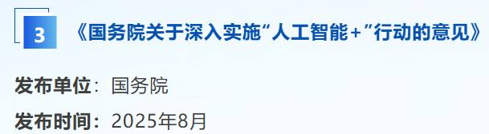
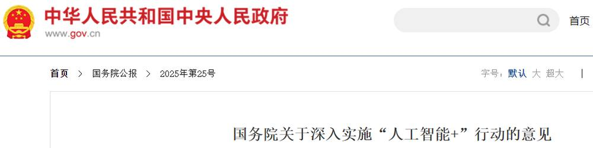
到2030年，我国人工智能全面赋能高质量发展，新一代智能终端、智能体等应用普及率超90%，智能经济成为我国经济发展的重要增长极，推动技术普惠和成果共享。到2035年，我国全面步入智能经济和智能社会发展新阶段，为基本实现社会主义现代化提供有力支撑。
第 3 页 · 电商个性化智能推荐
电商个性化智能推荐
AI生成的菜品广告
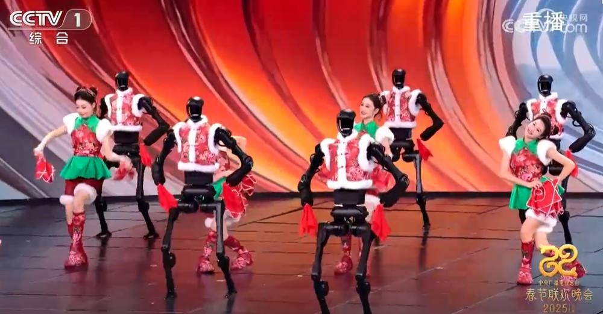
2025春晚人机协同演出
什么是AI？
第 4 页 · 第一次提出关于人工智能的概念
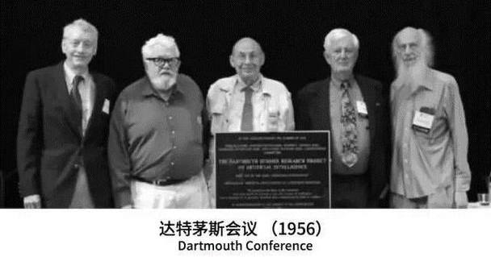
第一次提出关于人工智能的概念
人工智能是一门科学，是使机器做那些人需要通过智能来做的事情。
马文·明斯基
人工智能是一门关于研究知识的表示、知识的获取和知识的运用的学科。
尼尔斯·尼尔森
人工智能（Artificial Intelligence，简称AI）是一门研究、开发用于模拟、延伸和扩展人的智能的理论、方法、技术及应用系统的技术科学，旨在使机器能够胜任一些通常需要人类智能才能完成的复杂工作。
目前主流定义
一、人工智能概念
第 5 页 · 1.萌芽期
1.萌芽期
2.启动期
3.消沉期
4.突破期
5.高速发展期
二、人工智能发展简史
第 6 页 · 1.萌芽期
1.萌芽期
2.启动期
3.消沉期
4.突破期
5.高速发展期
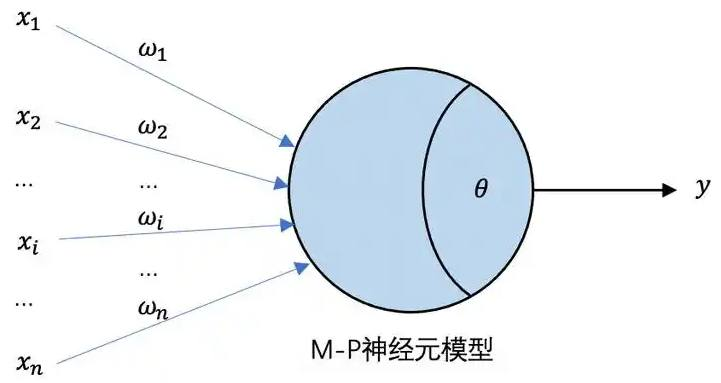
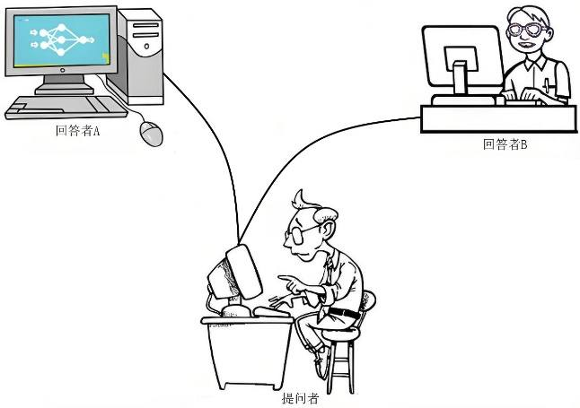
图灵测试
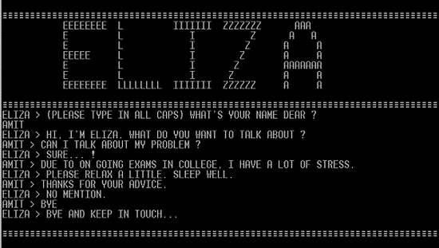
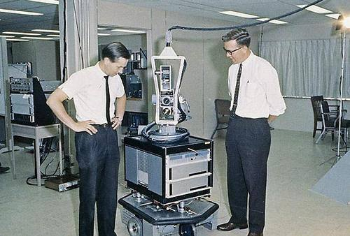
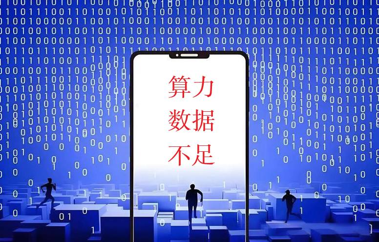
专家系统
深蓝
二、人工智能发展简史
第 7 页 · 5.高速发展期
5.高速发展期
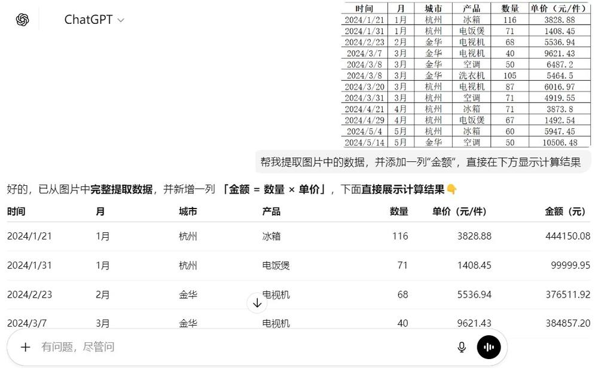
Sora
二、人工智能发展简史
第 8 页 · 三、人工智能的特征
三、人工智能的特征
像人一样感知
像人一样思考
像人一样行动
能看
能想
能做
第 9 页 · 三、人工智能的特征
三、人工智能的特征
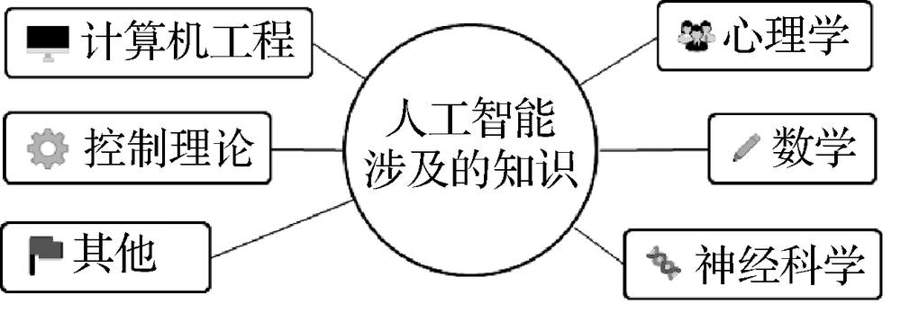

第 10 页 · AI带来的变革
AI带来的变革

以今昔对比的方式感受AI带来的变化，填写下表。
| 场景 | 以往方式 | 现在方式 | 未来方式 |
| 银行 | |||
| 购物 | |||
| 娱乐 | |||
| 汽车 | |||
| 制造 | |||
| 家庭 |
第 11 页 · 学生分享及教师点评
学生分享及教师点评

| 分享要点 | 分值 | 计分 | 教师点评 |
| 1、你是怎么收集任务数据的？ | 10 | 主动使用AI工具 | |
| 2、你与同学进行了哪些充分的讨论？ | 10 | 集思广益、团结协助 | |
| 3、请简述AI给上述6个场景带来的变化 | 30 | 积极思考、善于思考总结 | |
| 4、除此之外，你认为AI在哪个方面会有巨大影响？ | 20 | 创新思维、与众不同 | |
| 5、AI对你学业的影响有哪些？请简述1-3条 | 20 | 顶天立地，从身边做起 | |
| 6、其它（含逻辑、表情、主动、清晰、流畅、自信等） | 0-10 | 能说、亲和、善用、精技 |
第 12 页 · 子任务3：语音提示处理
子任务3：语音提示处理

主动拥抱AI
让AI赋能你我